Ser ou não ser? Desde as origens mais remotas, a morte acompanha o ser humano como questão inescapável — e a forma como cada civilização a enfrenta revela o que ela pensa sobre a vida, a alma e o sagrado.
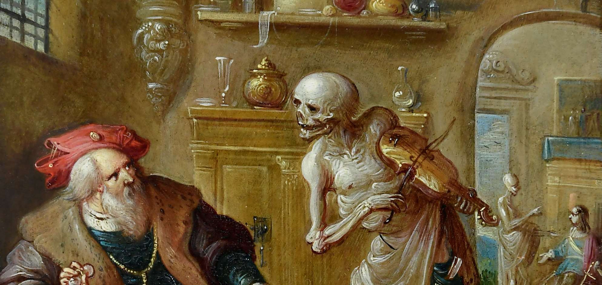
A morte tocando o violino, Frans Francken o Jovem, séc. XVII, coleção particular. A morte se apresenta ao homem rico, que a observa com espanto, cercado de suas riquezas terrenas — enquanto a ampulheta marca o tempo que se esgota.
A morte sempre foi entendida como uma necessidade inevitável. A questão central não é se morremos, mas o que acontece depois.
Para os gregos e judeus mais antigos, as almas humanas subsistiam num estado de sombras, sem poder praticamente nenhum, no Hades ou no Sheol.
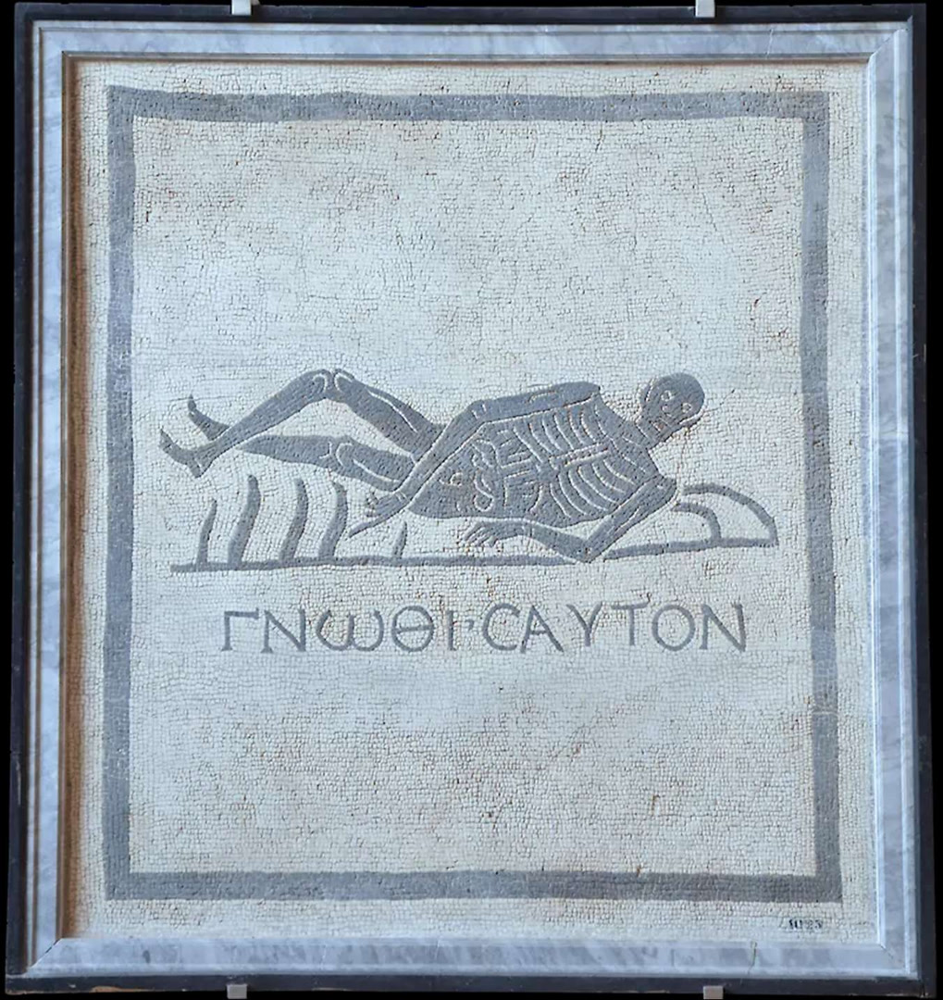
Gnoti seautón, "conhece-te a ti mesmo" — mosaico do esqueleto, ca. 100 d.C., Termas de Diocleciano, Roma. A morte era apenas um lembrete para conhecer-se a si mesmo e viver sabiamente no tempo disponível.
A felicidade estava nesta vida. A morte era um convite à sabedoria, não ao desespero.
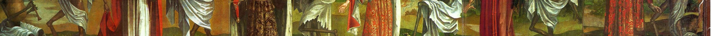
Dança macabra, de Bernt Notke, fins do séc. XV, igreja de São Nicolau, hoje no Museu de Arte da Estônia, Talin. A morte é vista como o grande equalizador, que chega para Papas tanto como leigos, reis e operários, homens e mulheres, e permite relativizar e ironizar todas as coisas e situações desta vida.
A arte cristã, até ca. 1600, reflete a esperança da ressurreição — podendo tratar do tema com leveza e até certa ironia.
No judaísmo, depois de ca. 500 a.C., desenvolve-se a esperança de um estado de felicidade após a morte — esperança continuada pelo cristianismo.
A arte cristã podia tratar da morte com leveza e até certa ironia, porque estava apoiada na certeza da futura ressurreição.
O tema desaparece da arte durante o cume do iluminismo e retorna a partir de 1820, no romantismo, mas com tons mais macabros, sem essa esperança última.
A morte sempre foi entendida como uma necessidade inevitável. A felicidade estava nesta vida, e a morte era apenas um lembrete para conhecer-se a si mesmo e viver sabiamente no tempo disponível.
A ilha dos mortos, de Arnold Böcklin, 1883. Caronte leva as almas dos mortos através do rio Styx. Alte Nationalgalerie, Berlim. Uma das imagens mais evocativas do destino pós-morte na imaginação ocidental.
Sarcófago dos esposos, estrusco, Caere, ca. 530-520 a.C., Museu Nacional Etrusco de Villa Giulia, Roma.
Desde que o ser humano é ser humano, cuidou dos seus mortos, procurando mantê-los perto de si e cercando-os de afeto.
Se os governantes tinham status divino, o esforço do povo para enterrá-los dignamente era imenso.
Necrópole de Saqqara, com as pirâmides de Unas (ca. 2345-2315 a.C.), Djoser (ca. 2670 a.C.) e Userkaf (ca. 2490), Badrashin, Gisé, Egito. Ao fundo, as pirâmides de Queops, Quefrém e Miquerinos. Reconstituição 3D por Savannah Dawson.
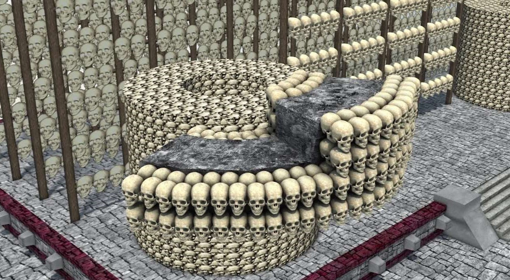
Reconstituição do Huey Tzompantli ("grande muro de crânios"), dentro do complexo do Templo Mayor asteca, hoje no centro da Cidade do México. Os tzompantlis eram edificações feitas com os crânios das pessoas sacrificadas aos deuses, alinhados em estacas ou agregados com argamassa. O "grande" continha mais de 140.000 caveiras por volta de 1520.
Algumas civilizações, especialmente os astecas e egípcios, giravam inteiramente em torno da morte.
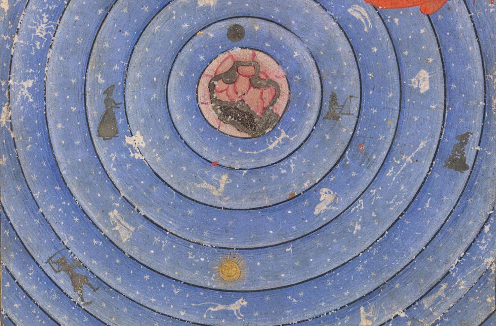
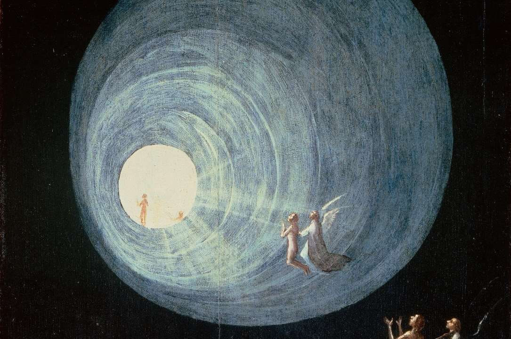
As grandes religiões oferecem imagens do destino das almas após a morte: a subida aos céus, a contemplação divina, a punição dos ímpios.
À esquerda, Maomé sobe ao sétimo céu no seu cavalo Buraq, guiado por São Gabriel e escoltado pelos anjos, 1665, iluminura em um manuscrito da obra Makhzan al-Asrar, de Nizami, Add MS 6613, fol. 3v, British Library.
À direita, As almas dos justos sobem aos céus, Hieronymus Bosch, ca. 1490-1516, Palazzo Ducale, Veneza. Anjos conduzem as almas em direção a um túnel de luz divina.
Desde que o ser humano é ser humano, cuidou dos seus mortos, procurando mantê-los perto de si e cercando-os de afeto.
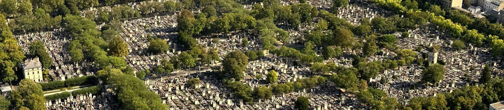
O cemitério Père-Lachaise em Paris, visto da Tour Montparnasse. Durante o iluminismo, passou-se a enterrar os mortos fora das cidades, em cemitérios perfeitamente planejados.
O racionalismo europeu, a partir de 1650, elimina a morte do panorama intelectual e artístico. Ela passa a ser uma questão "científica".
O principal objetivo da ciência seria eliminar definitivamente a morte. Continuamos esperando...
O racionalismo europeu elimina a morte do panorama intelectual e artístico. Com a instituição dos cemitérios planejados e higiênicos fora das cidades, a morte se torna questão "científica".
Com o sentimentalismo próprio do período romântico, a morte reaparece com toda a força, mas com um caráter de medo, quase de obsessão doentia — basta pensar nos livros Drácula, Frankenstein, A múmia, O corcunda de Notre Dame.
A morte perde todo o seu sentido, e com isso perde-se o sentido da vida. Kierkegaard fala do desespero humano, manifestado tanto nos que se entorpecem com trabalho e prazer quanto nos que recorrem ao suicídio.
Depois de literatos como Kafka, proclamam o desespero como situação natural do ser humano: estaríamos "condenados à liberdade", mas a uma liberdade sem sentido algum perante a morte. Não admiram as mortandades dos totalitarismos do século XX.
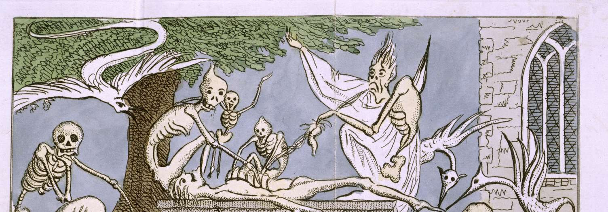
Esqueletos, fantasmas e entidades demoníacas num cemitério. Frontispício da obra de Matthew Gregory Lewis, Histórias de terror, 1808, R. Faulder, British Library.
Enquanto o século XVII foi frívolo e dedicado ao prazer, os séculos seguintes têm uma obsessão pelo tema da morte.
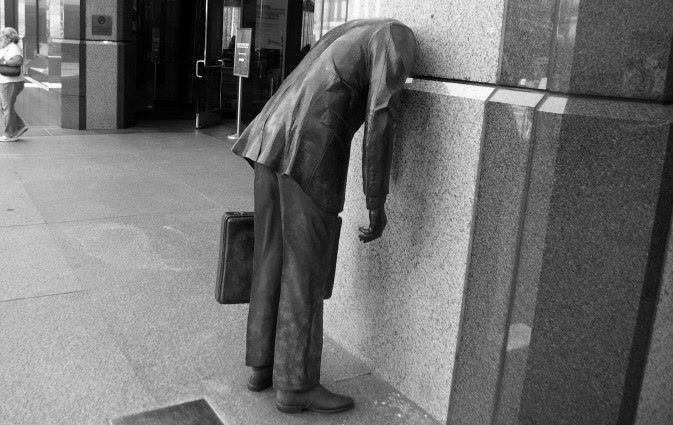
Mentalidade corporativa, Terry Allen, Los Angeles. O homem moderno enterra a cabeça no muro — literalmente — para não pensar na questão da própria morte, entorpecendo-se com trabalho e prazer.
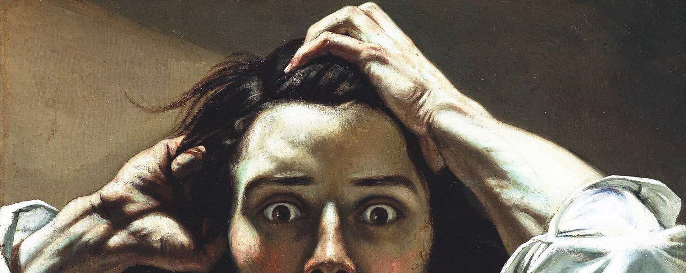
O desesperado (autorretrato), Gustave Courbet, ca. 1843-5, coleção particular. A imagem do homem que olha a morte de frente, sem a esperança da ressurreição — e encontra apenas angústia.
A morte perde todo o seu sentido, e com isso perde-se o sentido da vida. Kierkegaard fala do desespero humano que leva ao entorpecimento ou ao suicídio.
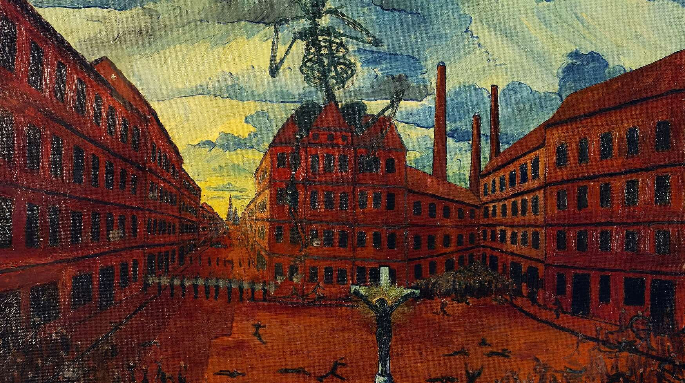
A guerra civil de 1919, Julius Endlweber, 1919, Museu Histórico do Exército, Viena. Sartre e Heidegger proclamam o desespero como situação natural: "condenados à liberdade", mas a uma liberdade sem sentido perante a morte. Não admiram as mortandades que acompanham a proliferação dos totalitarismos no século XX.
Ser ou não ser? A resposta a essa pergunta define não apenas o que pensamos sobre a morte — mas o que pensamos sobre a vida.